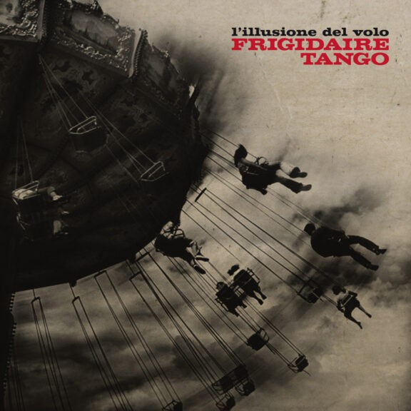
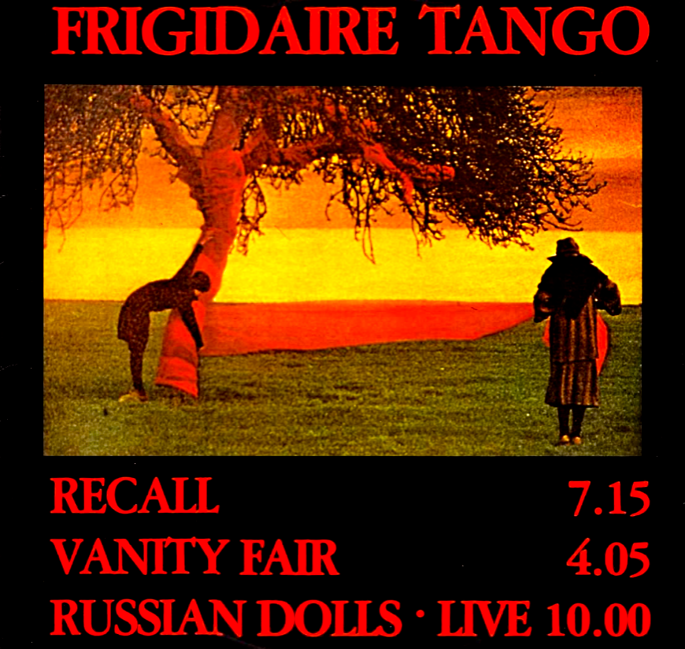
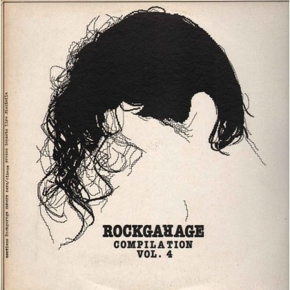
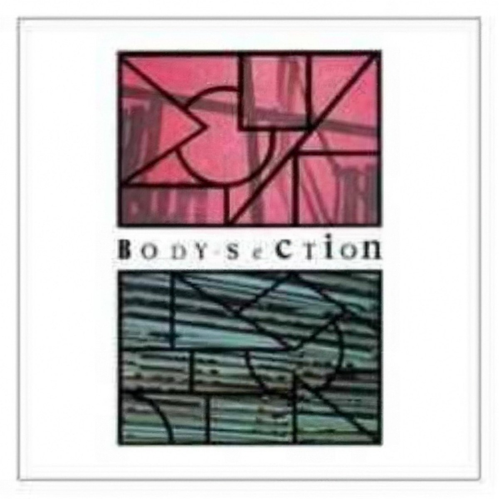

Music
Discography
Studio albums
Full-length records, newest first.

Modern Vintage Wave
Ten unreleased songs from 2008–2025, including "Fears" and "Non sei raggiungibile".

L'illusione del volo
First album in Italian. Produced by Giorgio Canali, with guests Fiumani, Tagliapietra and Galeri.

Music for Us
The lost second album, recorded between 1983 and 1985 and unreleased until 2006.

Russian Dolls
Mini-LP with "Recall" and "Vanity Fair".

The Cock
The debut, with "Dangerous Echo", "Blue & Pink", "Push" and "Black Curtains".
Live albums
Concert recordings.
Collections
Box sets and reissues of earlier material.

The Cock – Original Demotape 1980
Early studio sessions on 12-inch vinyl.

The Freezer Box
3 CDs: The Cock, the lost album Music for Us, and Live in Barcelona 1985.
Compilations
Compilations and other releases that include a Frigidaire Tango track.
Tribute album
20 covers by Giorgio Canali, Diaframma, Xabier Iriondo, Ilenia Volpe and others.

P.E.A.C.E. (Amnesty International)
Benefit compilation for Amnesty International, with "The Romantic Life-Guard".

Rockgarage Compilation Vol. 4
Compilation LP opening with the then-unreleased "Take Over From Me".

Body Section
Compilation produced by Rockerilla magazine, with "Vanity Fair".

Rockgarage Compilation Vol. 2
7-inch compilation EP with a live "Dazed Life".
Singles
Digital singles and limited editions.
Non sei raggiungibile
Single from Modern Vintage Wave, released in March 2026.
Fears
First single from Modern Vintage Wave, released in January 2026.

Oversouls
Single with "Russian Dolls" live at Shindy 2006, free with Sound & Vision magazine.
Click a record to see its tracklist.